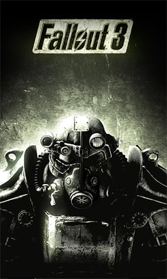

RPG · 2008
Fallout 3
The wasteland went first person and the Capital ruins became iconic.

Cover: Wikipedia: Fallout 3
Facts
- Released
- 2008-10-28
- Genre
- RPG
- Category
- RPG
- Platforms
- PC, PlayStation, Xbox
- Developers
- Bethesda Game Studios
- Publishers
- Bethesda Softworks
PC requirements
- Minimum
- [object Object]
- Recommended
- [object Object]